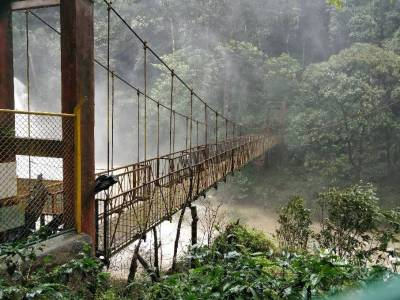

MADIKERI
1.Abbey Falls


Abbey falls are part of the river Kaveri. The location of abbey falls is in the center of private coffee and aromatic
spices plantations. This is called the spice estate. A businessman called Mr. Neravanda B.Nanaiah bought this place from
the Karnataka government for its restoration and up-gradation. He changed the outlook of the place from a dark forest to
a tourist spot. So, now this place has an enchanting view with coffee plantations all around.
These waterfalls at the height of 70 feet will mesmerize you. There is a hanging bridge which is constructed at some
distance from the Abbey falls, but the view from the bridge will take your breath away. Tourists visit Abbey falls
throughout the year but monsoon and winters are the best seasons to enjoy the scenic beauty and plenty of water. Roadways
connect Coorg to Mangalore, Bangalore, Mysore and many other important cities. Madikeri village is just 10 km away from Coorg.
So, Abbey falls is well connected from all over the country.
2.Dargah Sharif of Yemmemadu
Located in Yemmemadu near Napoklu of the Coorg district, Dargah Sharif of Yemmemadu is the most sacred shrines for
people of Islamic faith in the Coorg. The dargah is the holy tomb which has been built in the memory of Hazrath Sufi
Shaheed and Sayyed Hassan Sakaf Halramir. It was almost 366 years ago when both of these saints arrived from Persia and
gave religious discourses. They devoted their life to help poor and serve them.
Female devotees are not allowed inside the dargah and thus there are separate arrangements where they can offer their
prayers. The dargah and the Urs are maintained by the Yemmemadu Tajul Islam Muslim Jamaat. There is an Arabic Madrasa and
an orphanage which are also managed by the Yemmemadu mosque.
3.Kaveri Nisargadhama

Nisargadhama Ecological Park is tucked between a lush coverage of bamboo groves and a serene Kaveri river. Standing at
a distance of 28 km from Coorg, this place amplifies the overall beauty of Coorg. Stretched across a land cover of
64 acres, this place is abundantly blessed with a good variety of flora and fauna.
Nisargadhama is covered all over with a thick foliage cover of sandalwood and teak trees and bamboo groves. Boating,
elephant riding, and sightseeing are the fun-filled adventures here. River Kaveri is the place meant to enjoy your boating
adventure. Make sure to check the exact boating points with the forest department officials. Some spots are so shallow that
you won't be allowed to reach there.
You can plan your Nisargadhama visit either in November or December. This is immediately after the end of the monsoon session.
Post monsoon scenic tranquillity is something out of the box adventure to capture.
4.Madikeri Fort
Madikeri Fort is one of the interesting places for sightseeing in Coorg. It was first built in the last quarter of 17th
century by Mudduraja. There was a palace built inside the fort as well. It was rebuilt into fort of stone and bricks by
Tipu Sultan, who gave for the name of Jaffarabad.In 1814, the fort was built with mortar and bricks by the Lingarajendra
Wodeyar II.
There has been battles which the fort has seen and thus represents a rich historical and cultural background. In 1790, it
came under the control of Doddavira Rajendra. Later it was renovated by Tipu Sultan. This reconstruction was followed by
the renovation by the King Lingarajendra Wodeyar II.
5.Mallalli Falls
The stunning milky-white Mallalli Falls finds abode in the north of Kodagu region is the pride of Karnataka, India.
The cascading falls seated 26 km off Somwarpet right at the base of the Pushpagiri Hills leave tourists mesmerized with
its beauty and splendour.
It starts from where the Kumaradhara River takes an extreme dive of more than 1000 m and then takes a natural course
leading to the Arabian Sea. Take in the beauty and behold the sights of the verdant jungles, the surrounding scenery,
and the river diving deep from the origin of Mallalli Falls.
Mallalli Falls is the most sought-after tourist place to visit in Coorg, Karnataka. It is one of the bemusing natural
beauties, frequently talked about together with the Abbey Falls, Kodagu. One cannot compare the heavenly beauty of
Mallalli Falls with another water body in the state of Karnataka.
6.Talakaveri Temple